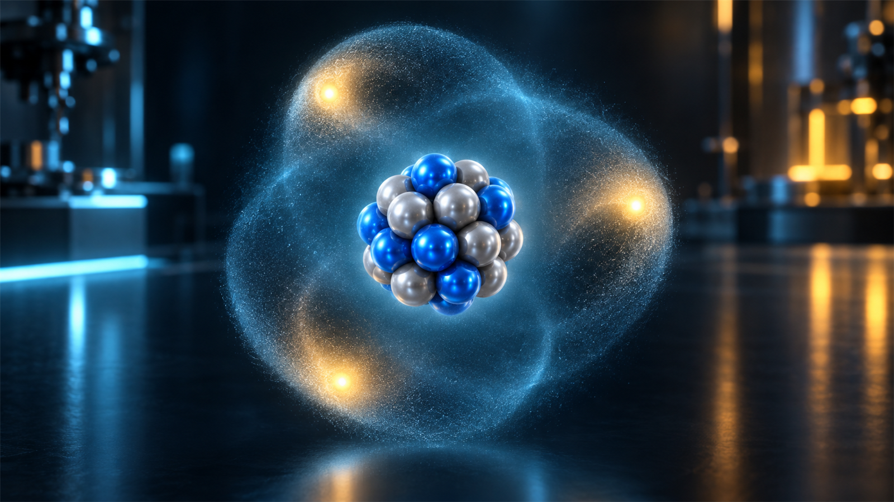
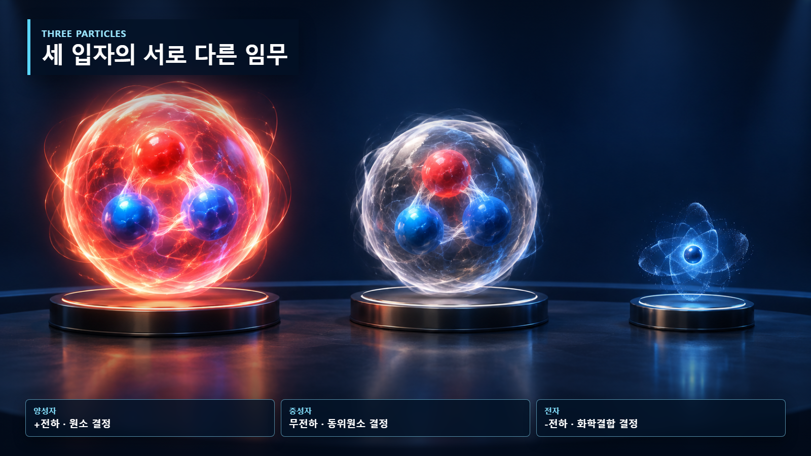
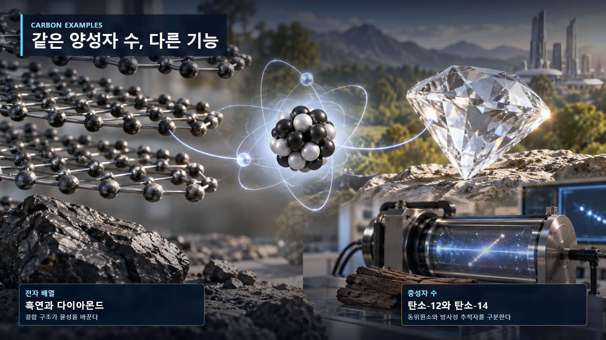

원자와 원자핵의 기초 · 003
양성자·중성자·전자의 역할
원소의 정체성, 동위원소와 화학적 성질을 나누는 세 입자

양성자는 원소의 종류를, 중성자는 동위원소와 핵 안정성을, 전자는 화학결합과 이온 형성을 주로 결정합니다.
양성자가 정하는 원소의 정체성
양성자는 양전하를 띠며 원자핵을 구성합니다. 원자핵의 양성자 수가 원자번호이며 원소의 종류를 결정합니다. 양성자가 1개이면 수소, 2개이면 헬륨, 6개이면 탄소입니다.

중성자가 만드는 핵종의 차이
중성자는 전하가 없고 질량은 양성자와 비슷합니다. 탄소-12와 탄소-14는 모두 양성자가 6개지만 중성자가 각각 6개와 8개입니다. 화학적으로는 모두 탄소지만 핵의 안정성과 방사성 성질은 달라집니다.
| 입자 | 전하 | 상대질량 | 주된 역할 |
|---|---|---|---|
| 양성자 | +1 | 약 1 | 원소의 종류 결정 |
| 중성자 | 0 | 약 1 | 동위원소와 핵 안정성 |
| 전자 | −1 | 약 1/1,800 | 화학결합과 이온 형성 |
전자가 좌우하는 화학적 성질
전자는 음전하를 띠고 원자핵 주변에 확률분포로 존재합니다. 질량은 양성자의 약 1/1,800에 불과하지만, 원자끼리 결합하고 전류가 흐르는 방식은 전자배치가 결정합니다. 전자를 잃거나 얻으면 원소는 그대로인 채 이온이 됩니다.

탄소 원자의 역할 분담
탄소-12에서 전자 하나를 떼면 탄소 이온이 되고, 중성자 두 개를 더하면 탄소-14가 됩니다. 그러나 양성자 하나를 더하면 원자번호 7인 질소로 바뀝니다. 같은 원자 안의 입자라도 바뀌었을 때 나타나는 결과가 서로 다릅니다.
입자 수 변화의 두 번째 예시
산소 원자에는 양성자 8개가 있다. 중성 원자라면 전자도 8개지만 전자 2개를 더 얻으면 산화물 이온이 된다. 이때 핵은 그대로이므로 여전히 산소다. 반면 핵 속 양성자가 9개가 되면 원자번호가 바뀌어 플루오린이 된다. 전자 변화는 전하 상태를, 양성자 변화는 원소의 정체성을 바꾼다. 중성자 수만 달라지면 원소명은 유지되지만 질량과 핵 안정성이 달라진다.
원자로와 계측에서의 실제 적용
원자로에서 중성자는 전하가 없어 원자핵의 양전하에 크게 밀려나지 않고 핵 가까이 접근할 수 있다. 이 성질 때문에 핵분열을 일으키거나 다른 핵에 포획된다. 전자는 재료의 전기전도와 검출기 신호 생성에 관여하고, 양성자 수는 연료와 구조재를 구성하는 원소를 구분한다. 따라서 노심해석은 중성자 거동을, 재료·계측 설계는 전자와 원자의 반응을 함께 살핀다.
행성모형과 질량비에 관한 한계
전자를 핵 주위를 도는 작은 행성으로 그린 그림은 위치관계를 설명하는 상징일 뿐 실제 궤적이 아니다. 전자는 확률분포로 기술된다. 또한 전자의 질량을 양성자의 약 1/1,800이라고 말하는 것은 규모 비교이며, 전자가 중요하지 않다는 뜻이 아니다. 작은 질량에도 화학결합과 전류를 지배한다.
전하 보존과 입자 변환
핵반응이나 방사성붕괴에서도 전하와 에너지는 장부처럼 보존된다. 베타마이너스붕괴에서는 중성자 하나가 양성자로 바뀌면서 전자와 반중성미자를 방출한다. 핵 속 양성자 수가 하나 늘기 때문에 원자번호도 하나 커진다. 자유중성자는 안정하지 않지만 핵 안에서는 결합상태와 에너지 조건에 따라 존재할 수 있다. 이 예시는 입자의 역할이 고정된 구슬의 교환이 아니라 보존법칙을 만족하는 상호작용임을 보여준다.
세 입자의 실제 크기를 그림의 공 크기로 비교해서도 안 된다. 전자는 현재 지식에서 점입자로 다뤄지고, 양성자와 중성자는 쿼크로 이루어진 복합입자다. 교육 그림은 전하·위치를 구분하기 위해 크기를 과장한다.
중성 원자와 이온의 전하
중성 원자에서는 양성자 수와 전자 수가 같아 전체 전하가 0이다. 이 관계는 원소의 정체성을 정하는 기준이 아니라 전기적 상태를 나타낸다. 전자를 잃거나 얻어도 핵이 유지되는 한 같은 원소이며, 질량의 대부분은 핵자에 집중된다.
핵심 정리
양성자 수는 원소, 중성자 수는 동위원소와 핵 안정성, 전자배치는 화학결합과 이온을 주로 결정한다. 세 입자는 독립적으로 움직이는 부품이 아니라 전기력과 핵력, 양자상태를 통해 결합된 하나의 원자 시스템을 이룬다.